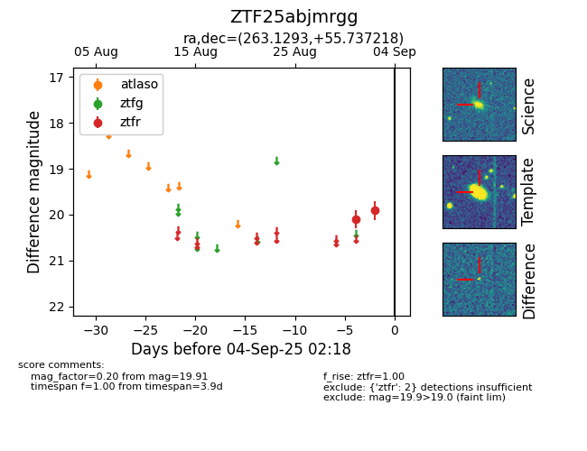

FINK: ZTF25abjmrgg
Lasair: ZTF25abjmrgg
ALeRCE: ZTF25abjmrgg
ZTF25abjmrgg (ztf,fink)
equatorial (ra, dec) = (263.1293,+55.73722)
galactic (l, b) = (83.6935,+33.09340)

last ztfr=19.91
2 ztfr detections